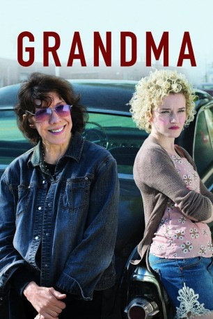

#3227 Grandma
 gesehen am 31.03.2016
gesehen am 31.03.2016
 
 IMDB-Wertung: 6.7 / 10
IMDB-Wertung: 6.7 / 10  Metascore: 77
Metascore: 77 
Elle Reid hat sich gerade von ihrer Freundin getrennt, als ihre Enkelin Sage unerwartet auftaucht und vor Sonnenuntergang 600 Dollar braucht. Grandma Elle ist gerade knapp bei Kasse, und so versuchen die Rentnerin und Sage alles, um an Bares zu kommen. Dabei wirbeln ihre unangekündigten Besuche bei alten Flammen und Freunden viel Staub und Geheimnisse auf.
Jahr: 2015
Dauer: 78 Minuten
FSK: 12
Land: USA Studio: Sony Pictures ClassicsTonspuren: DD5.1 - ,
Untertitel: Deutsch, Englisch,
Auflösung: 1080p (1920x1040) Größe: 6656 MB
Genre: Drama, Komödie
Regisseur: Paul Weitz
Drehbuch: Paul Weitz
Soundtrack: Joel P. West
Darsteller:
Datei: X:\2015(G-M)\Grandma (2015, FSK12, 1920x1040).mkv seit 19.02.2016
Festplatte: HD 2015(A-Z)
 Es gibt insgesamt 129 Filme in der Gruppe '2015(G-M)'
Es gibt insgesamt 129 Filme in der Gruppe '2015(G-M)'